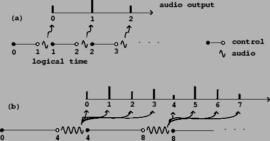
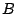
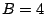
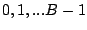

So far we have dealt with audio signals, which are just sequences  defined for integers
defined for integers  , which correspond to regularly spaced points in time.
This is often an adequate framework for describing synthesis techniques, but
real electronic music applications usually also entail other computations
which have to be made at irregular points in time. In this section we'll
develop a framework for describing what we will call
control
computations. We will always require that any computation correspond to
a specific
logical time.
The logical time controls which sample of audio output will be the first to
reflect the result of the computation.
, which correspond to regularly spaced points in time.
This is often an adequate framework for describing synthesis techniques, but
real electronic music applications usually also entail other computations
which have to be made at irregular points in time. In this section we'll
develop a framework for describing what we will call
control
computations. We will always require that any computation correspond to
a specific
logical time.
The logical time controls which sample of audio output will be the first to
reflect the result of the computation.
In a non-real-time system (such as Csound in its classical form), this means that logical time proceeds from zero to the length of the output soundfile. Each ``score card" has an associated logical time (the time in the score), and is acted upon once the audio computation has reached that time. So audio and control calculations (grinding out the samples and handling note cards) are each handled in turn, all in increasing order of logical time.
In a real-time system, logical time, which still corresponds to the time of the next affected sample of audio output, is always slightly in advance of real time, which is measured by the sample that is actually leaving the computer. Control and audio computations still are carried out in alternation, sorted by logical time.
The reason for using logical time and not real time in computer music computations is to keep the calculations independent of the actual execution time of the computer, which can vary for a variety of reasons, even for two seemingly identical calculations. When we are calculating a new value of an audio signal or processing some control input, real time may pass but we require that the logical time stay the same through the whole calculation, as if it took place instantaneously. As a result of this, electronic music computations, if done correctly, are deterministic: two runs of the same real-time or non-real-time audio computation, each having the same inputs, should have identical results.
|  |
Figure 3.2 (part a) shows schematically how logical time and sample computation are lined up. Audio samples are computed at regular periods (marked as wavy lines), but before the calculation of each sample we do all the control calculations that might affect it (marked as straight line segments). First we do the control computations associated with logical times starting at zero, up to but not including one; then we compute the first audio sample (of index zero), at logical time one. We then do all control calculations up to but not including logical time 2, then the sample of index one, and so on. (Here we are adopting certain conventions about labeling that could be chosen differently. For instance, there is no fundamental reason control should be pictured as coming ``before" audio computation but it is easier to think that way.)
Part (b) of the figure shows the situation if we wish to compute the audio output in blocks of more than one sample at a time. Using the variable  to denote the number of elements in a block (so  in the figure), the first audio computation will output samples  all at once in a block computed at logical time . We have to do the relevant control computations for all periods of time in advance. There is a delay of samples between logical time and the appearance of audio output.
Most computer music software computes audio in blocks. This is done to increase the efficiency of individual audio operations (such as Csound's unit generators and Max/MSP and Pd's tilde objects). Each unit generator or tilde object incurs overhead each time it is called, equal to perhaps twenty times the cost of computing one sample on average. If the block size is one, this means an overhead of 2,000%; if it is sixty-four (as in Pd by default), the overhead is only some 30%.